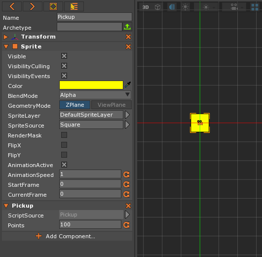
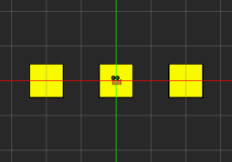
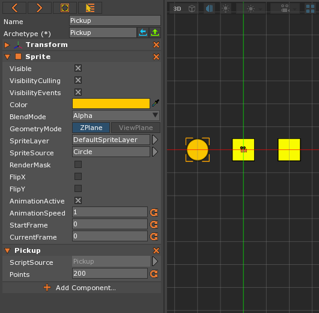
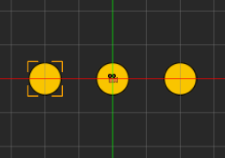
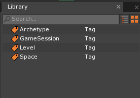

Archetypes
This lessons covers the creation and use of archetypes.
Archetypes
An archetype in the Zero Engine (also known as a blueprint, prefab, or template in other engines) is a collection of components and their settings which is used to create objects. All of the objects created from a certain archetype start with the same data, but any changes to that data after their creation do not affect the archetype. One benefit of archetypes is that any changes to the archetype affect all of the objects you have created from it. We are going to create some archetypes so that we can use them to create objects later.
Create a New Project
Adding a Pickup ZilchScript
Add a new ZilchScript resource named: ‘Pickup’
Update your script to look like this:
class Pickup : ZilchComponent
{
[Property]
var Points : Integer = 0;
}
Creating an Object
- Command :
CreateSpriteor - In the Properties Window
- Set Name to:
Pickup - Under Sprite
- Set Color to : Yellow [ R: 255, G: 255, B: 0, A: 1.00 ]
- Add the Component Pickup
- Under Pickup
- Set Points to 100
- Under Pickup
- Set Name to:
Here’s what your object should look like:

Why Archetypes?
Imagine we were to copy and paste this object many times throught the level.
What happens if we want to change the value of this pickup? We would have
to find all pickups in the level and change their Points values. Even with
multiselect we might miss a few or there might be pickups on other levels.
Archetypes will allow us to change all pickups at once.
Let’s create our first Archetype.
- Select the Object
- In the Properties Window
- Set the Archetype Name to:
Pickup - Press the green Upload to Archetype button
- Set the Archetype Name to:
This object is now Archetyped.
Creating Multiple Objects
Copy and paste the object multiple times.

Changing Archetyped Objects
Let’s change the property values of one of the pickups. Say that we want it to be more of a gold color and worth more points.
- In the Properties Window
- Under Sprite
- Set Color to : Gold [ R: 255, G: 200, B: 0, A: 1.00 ]
- Set SpriteSource to: Circle
- Under Pickup
- Set Points to: 200
- Under Sprite
Notice that object now looks like this:

Notice, in the Properties Window, the Archetype property looks like this:
Notice the (*) after the word Archetype
This means the object is modified from archetype. This object has local changes that are not part of the archetype. The Archetype property has two buttons now: the Revert to Archetype button and the Upload to Archetype button. The Revert button will remove the local changes. The Upload button will take the local changes and apply them to all archetyped objects.
Uploading to Archetype
- In the Properties Window
- Press Upload button.

Notice all the objects have now changed to be the same. Check to see that
both the color and the Points under Pickup have changed. This change would
modify all archetyped objects in all levels to the new values.
Reverting to Archetype
- In the Properties Window
- Under Sprite
- Set Color to: White [ R: 255, G: 255, B: 255, A: 1.00 ]
- Under Sprite

After testing it out we determine we like what we had before, so press the Revert button to revert the object to gold.
Created Archetypes can be found in the Library.
- In the Library Window

Double-Clickon theArchetypesTag
- Select the
Pickuparchetype

Notice the property grid shows you the archetyped object.
- Drag the archetype from the library onto the game window.
This creates an instance of your archetyped object. This allows you to quickly populate your levels with objects you have already set up.